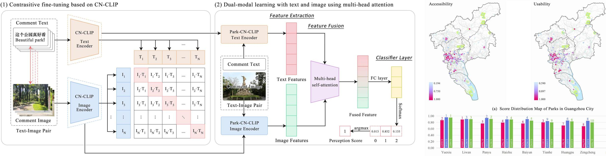
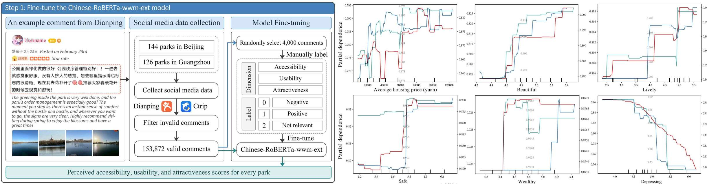
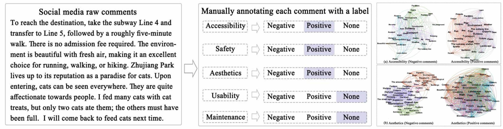

研究演示：展示预先计算的模型结果。Research demo: displays precomputed model results.
社交媒体文本分析
基于自建的公园感知数据集（已公开），训练Chinese-RoBERTa-wwm-ext等模型，能够有效对公园社交媒体文本的可达性、可用性、吸引力、安全感、美感与维护管理等维度进行评分。
Social Media Text Analysis
By training the Chinese-RoBERTa-wwm-ext model on a self-constructed park perception dataset, we can effectively evaluate park-related social media texts across multiple dimensions, including accessibility, usability, attractiveness, safety, aesthetics, and maintenance.

Assessing and interpreting perceived park accessibility, usability and attractiveness through texts and images from social media
This study introduces the Park Dual-modal Perception (PDP) model, which uniquely combines text and image analysis from social media data to evaluate public perceptions of urban parks. Applied to 130 parks in Guangzhou, the model achieved 86.81% accuracy in assessing accessibility, usability, and attractiveness, outperforming standard models.

Exploring temporal and spatial patterns and nonlinear driving mechanism of park perceptions: A multi-source big data study
This research uses a fine-tuned Chinese-RoBERTa-wwm-ext model to analyze over 150,000 online comments on 270 parks in Beijing and Guangzhou, assessing perceived accessibility, usability, and attractiveness. The study identifies significant seasonal and spatial patterns in park use and employs machine learning to determine the nonlinear drivers behind public perceptions.

How to quantify multidimensional perception of urban parks? Integrating deep learning-based social media data analysis with questionnaire survey methods
This paper develops a deep learning model based on ERNIE to assess six dimensions of urban park perception—accessibility, safety, aesthetics, attractiveness, maintenance, and usability—using social media data. The model's effectiveness, achieving over 80% accuracy, was validated by comparing its results with a traditional questionnaire survey.
开始试用 Start Trial
请选择模型与示例评论，浏览预先计算的多维感知结果。 Select a model and an example comment to explore precomputed perception results.
可达性Accessibility 可用性Usability 吸引力Attractiveness
美感Aesthetics 安全感Safety 维护管理Maintenance 可达性Accessibility 可用性Usability 吸引力Attractiveness